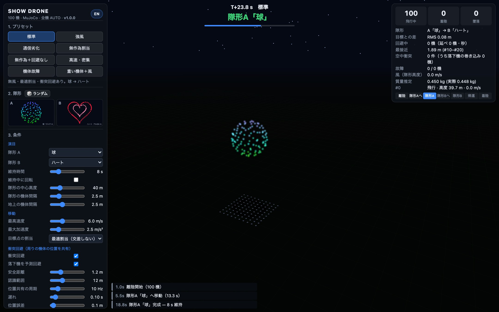

01
12 種類の隊形を自由に組み合わせ、A から B へ空間モーフィング
球・ハート・星・二重螺旋・土星・文字「N85」・ウェーブ・立方体・スマイル・富士山と太陽・三重リング・水平グリッドの 12 種類から隊形 A と B を自由に選べます。ハンガリアン法で移動距離の二乗和が最小になるよう目標スロットを割り当て、共通の最小ジャーク軌道で滑らかに変形するため、最適割当では 100 機の経路が一度も交差しません。
- 12 種類の隊形（🎲 ランダム選択可）
- 維持中の鉛直軸回転
- ハンガリアン最適割当（CAPT）